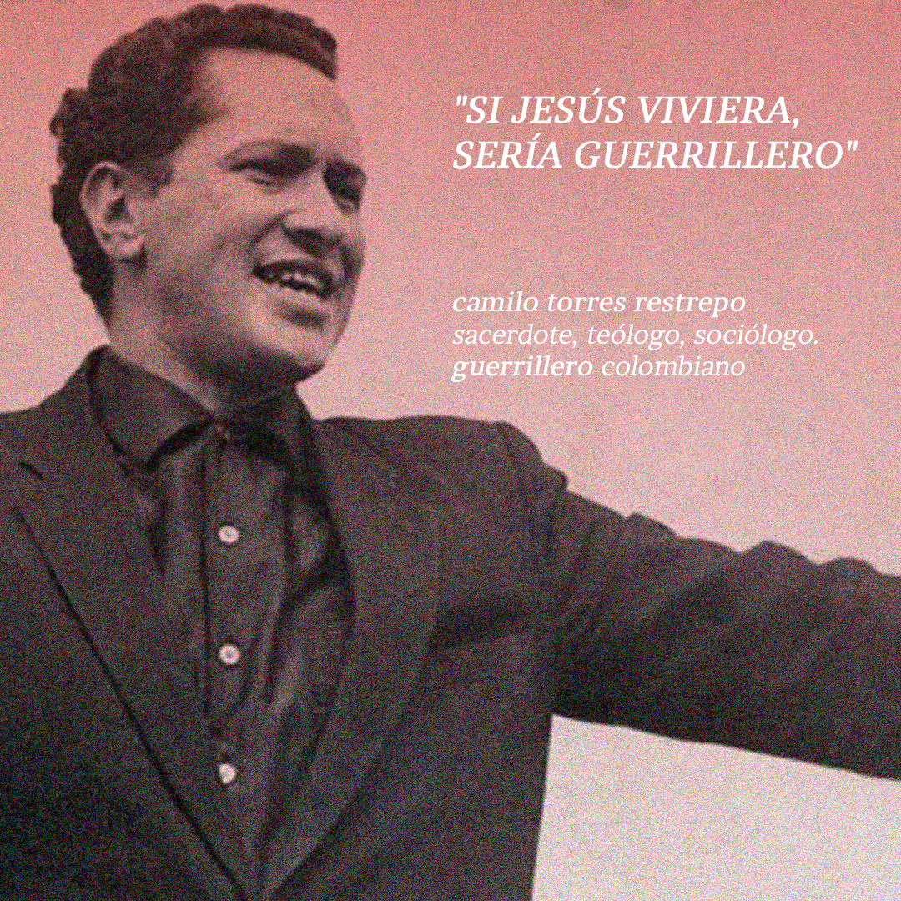
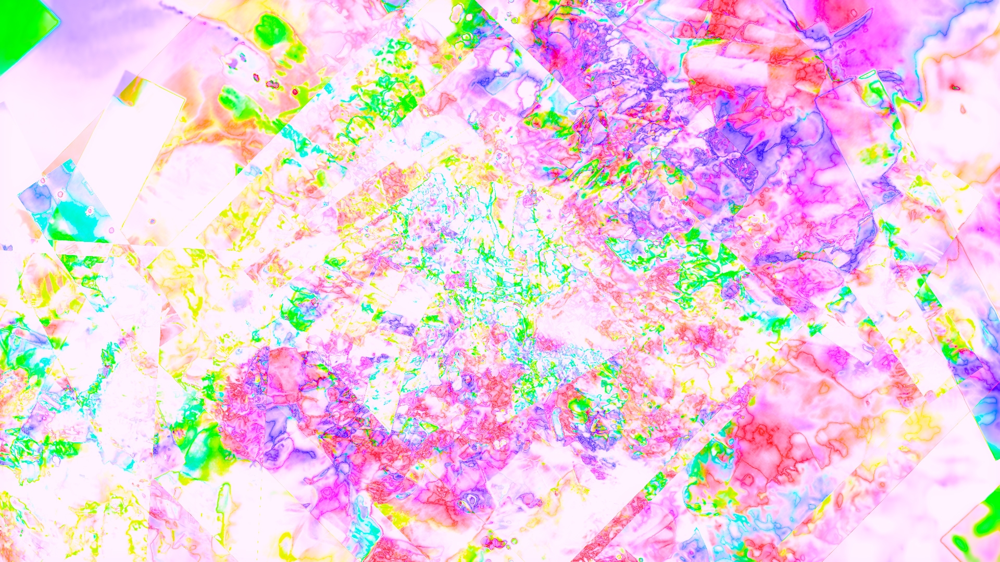

Estudiante de tercer año de Ingeniería Civil en Computación en la Facultad de Ciencias Físicas y Matemáticas interesado en la ciencia de datos y su aplicación en astronomía.
también me gustan la música rock, el cine y estudio chino mandarín

entre cristianismo y revolución, no hay contradicción

imagen de mi amigo victor soho <3